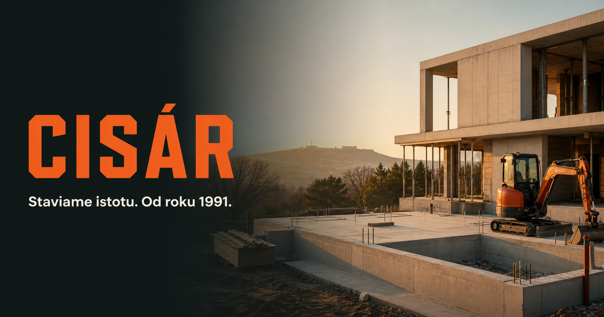

Domy a základy
Od prípravy pozemku a základovej dosky až po rodinný dom na kľúč.
Domy na kľúčZákladové dosky
Stavebná spoločnosť · Chorvátsky Grob
Jedna skúsená firma pre stavbu, rekonštrukciu aj exteriér. Jasná dohoda, zodpovedná realizácia a výsledok, ktorý vydrží.

Čo pre vás postavíme
Z množstva jednotlivých služieb sme vytvorili šesť zrozumiteľných oblastí. Ľahšie nájdete, čo potrebujete, a pri kombinovanej zákazke nemusíte koordinovať viac dodávateľov.
Od prípravy pozemku a základovej dosky až po rodinný dom na kľúč.
Výkopy, pokládka a obnova rozvodov vrátane finálnej úpravy terénu.
Terasy, chodníky, komunikácie a záhrady, ktoré fungujú ako jeden celok.
Komplexné obnovy bytov, domov aj komerčných priestorov bez chaosu.
Silnoprúd, slaboprúd, obklady a nadväzujúce práce pod jednou réžiou.
Skúsená realizácia, koordinácia a kontrola kvality pri väčších zákazkách.
Certifikovaná kvalita
Naše systémy kvality, environmentálneho manažmentu a bezpečnosti práce sú nezávisle certifikované. Každý dokument si môžete otvoriť v plnom rozlíšení.
Vybrané realizácie
Rodinné domy, verejné budovy aj komerčné prevádzky. Rôzny rozsah, rovnaký dôraz na detail a spoľahlivé odovzdanie.
Novostavba občianskej vybavenosti s bytovými jednotkami a kancelárskymi priestormi.
Chorvátsky GrobKompletná výstavba, terénne úpravy a spevnené plochy.
DúbravkaZateplenie budovy, nová fasáda, strecha a klampiarske práce.
Slovenský GrobKompletné stavebné úpravy komerčnej prevádzky.
NitraO spoločnosti CISÁR
Začali sme v roku 1991. Od roku 2007 pôsobíme ako CISÁR s.r.o. a dnes realizujeme stavby rôzneho druhu pre súkromných, firemných aj verejných klientov.
Spájame remeselnú prax s modernými technológiami a zodpovedným vedením stavby. Našim cieľom nie je iba dokončiť zákazku, ale vytvoriť podmienky pre dlhodobú spoluprácu.
„Záleží nám na výsledku a spokojnosti klienta.“Milan Cisár · konateľ
Ako spolupracujeme
Od prvého telefonátu viete, čo bude nasledovať. Komunikácia a kontrola sú súčasťou práce, nie doplnok navyše.
Pozrieme si miesto, rozsah a riziká zákazky.
Dohodneme technický postup, rozpočet a termín.
Koordinujeme ľudí, profesie aj materiál na stavbe.
Výsledok skontrolujeme a odovzdáme čistý a hotový.
Začnime váš projekt
Zavolajte nám alebo pošlite stručný dopyt. Ozveme sa vám a dohodneme ďalší krok.